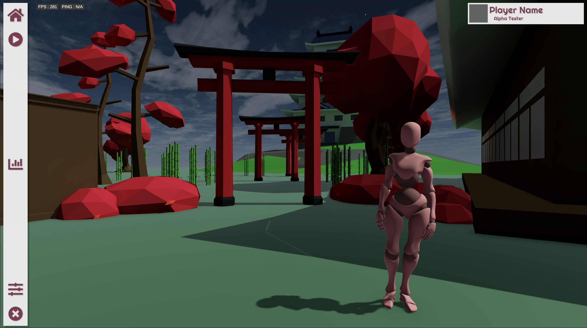
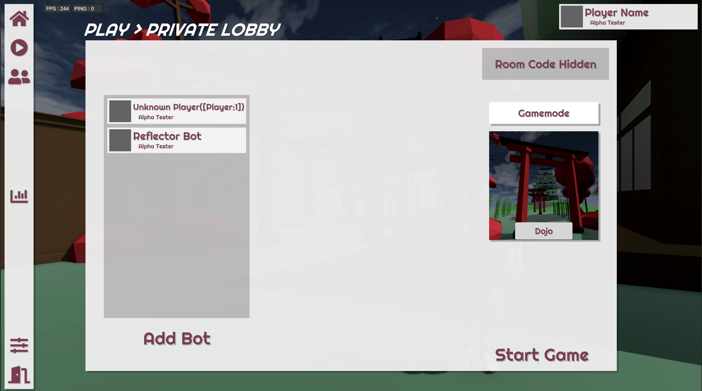
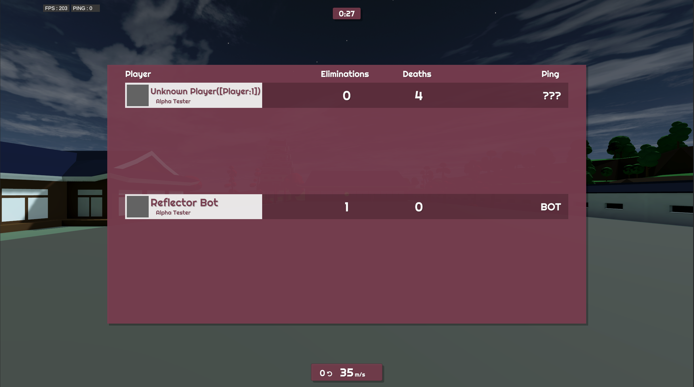
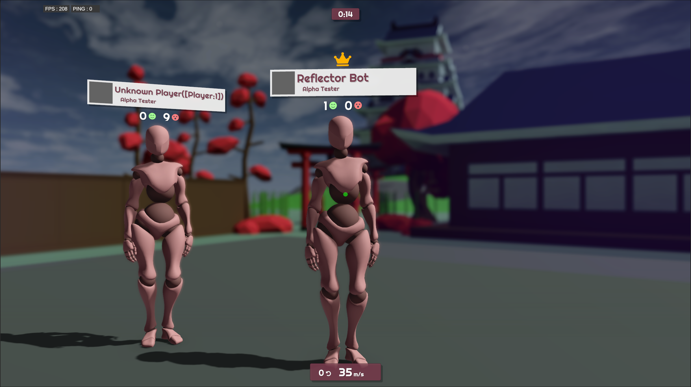
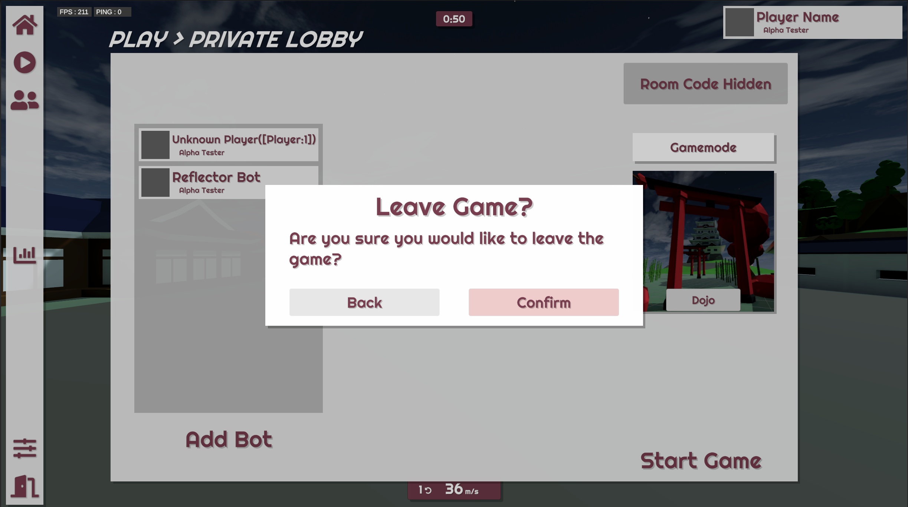

A prototype template for a competitive multiplayer game using Unity and Photon Fusion networking framework.
The goal was to develop a full-flow framework for a competitive-style multiplayer game. The gameplay is based on, and inspired by a community gamemode from Team Fortress 2 called Dodgeball. In this, there is a rocket that targets players, locks on and homes towards them. The player's goal is to reflect this rocket with their weapon as it comes close to them. This causes the rocket to retarget to an enemy player but also increases the rocket's speed and difficulty. The aim is to out-survive your opponent and avoid contact with a increasily more diffuclt rocket as the game progresses.
The gameplay was designed to be very simple but make use of common concepts and components that could be adjusted for any type of game. As such, components like score tracking, hit-compensated raycasting, respawning and victory conditions were developed. Support for both player-hosted public and private games was added, along with basic support for a dedicated server flow.
Many of the major systems for this project were designed to be incredibly versatile and standalone such that I could reuse them in other projects. The settings framework and audio management systems are notable examples of this, with the gamemode and game flow management also being easily adaptable for further multiplayer projects.
The UI for the main-menu is designed to be used in all states of the game, allowing for better consistency and enabling all features to be usable at all times.
The main-menu can also load the actual game maps in a background state which provides a more scenic and engaging menu screen.
Game settings can easily by defined in code through a model class. Parameters are event-based and are designed to be freely updated dynamically with immediate feedback. Changes are automatically saved to json files which are then loaded again on startup.
Gamemodes themselves can support custom settings aswell using the same underlying settings framework.
The template supports private lobbies using room-codes. Maps and gamemodes can be selected here and additional bot players can be added. Players are returned to this lobby upon completion of a session allowing settings to be seemlessy changed again. The host can also at any time return all players to the lobby aswell.
Basic elimination and death tracking components were added with simple scoreboard.

A lineup screen that shows following the end of a session, tracking the rankings of the players and their stats.
A standardised popup system to deliver information or important prompts to the player.
